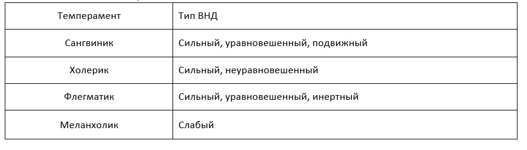

Вопросы:
- Понятие. История изучения.
- Теория И. П. Павлова о типах ВНД.
- Свойства темперамента; характеристика типов темперамента.
1 вопрос
Темперамент – биологически обусловленное свойство личности, определяющее динамику протекания всех психических процессов и состояний.
Темперамент является биологическим фундаментом на котором формируется личность как социальное существо.
Краткая история изучения:
- Гуморальная теория (Гален, Гиппократ) – темперамент зависит от активности той или иной жидкости в организме.
- Конституциональная теория (Ламброзо, Кречмер, Шелдон) – телосложение и психические проявления являются связанными параметрами.
- Теория Павлова о типе ВНД.
2 вопрос
Изучая условные рефлексы Павлов отмечал индивидуальные особенности в их протекании и предположил, что в основе этих различий лежат фундаментальные свойства нервной системы:
- Сила возбуждения НС – отображает работоспособность нервных клеток, их способность выдерживать сильное и длительное возбуждение.
- Сила торможения – скорость угасания рефлексов.
- Уравновешенность нервных процессов - указывает на равную силу возбуждения и торможения.
- Подвижность НС – скорость смены возбуждения и торможения.
Из сочетания этих свойств складывается тип ВНД. А темперамент является внешним проявлением типа ВНД.
Типы ВНД делится на:
- Слабый;
- Сильный:
- Неуравновешенный;
- Уравновешенный:

3 вопрос
Свойства темперамента:
- Эмоциональная возбудимость (нейротизм) – характеризуется тем, воздействие какой силы необходимо для возникновения эмоциональной реакции.
- Активность – степень воздействия человека на окружающий мир.
- Пластичность (ригидность - противоположное) – характеризуется тем, насколько легко или сложно приспосабливается человек к внешним обстоятельствам, насколько изменчиво его поведение.
- Экстраверсия (интроверсия).
- Темп реакции – скорость протекания психических процессов.
Характеристика типов темперамента:
Сангвиник – общителен, легко приспосабливается к внешним условиям, оптимистичен, активен, эмоции сильные и ярко выражены, легко переключается с одной деятельности на другую.
Холерик – повышенная возбудимость, вспыльчивость, несдержанность, раздражительность. Характерны спады и подъемы настроения, эмоции бурные, часто бесконтрольные. Много поверхностных интересов.
Флегматик – новые формы поведения вырабатываются медленно, но остаются надолго. Уравновешенный, медлительный, работоспособный; эмоции сильные, но со слабым внешним выражением; сложности при смене деятельности.
Меланхолик – повышенная чувствительная к малейшим стимулам, ранимы, тревожны, пессимистичны, необщительны, часто творчески одарены.